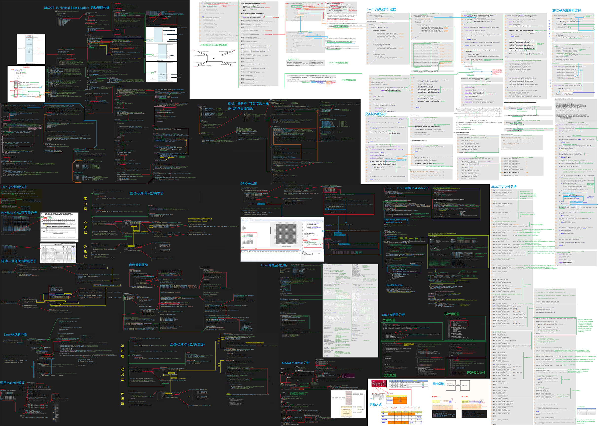
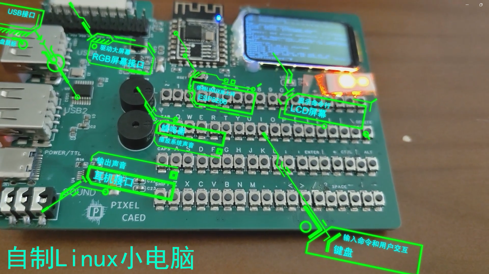

自制带全键盘的便携Linux小电脑
这是我在2025年1月底制作完成的Linux小板子，在网上开源教程的帮助下，完成了uboot、Linux kernel、根文件系统的移植， 完成了USB，网卡，屏幕，声卡等驱动适配工作。此外，我额外添加了自制的全键盘驱动电路，编写了对应的全键盘驱动，并接入命令行，使得小电脑在通上电之后不需要电脑给串口发消息，使用板载的全键盘就可以操作屏幕上的命令行，不管是在家，在外面都可以随时随地玩Linux命令行，甚至还可以安装软件，写各种代码，使用板载gcc编译并运行C语言代码。

从去年初开始，我通过网上的开源项目体验到嵌入式Linux的魅力后，我想画功能更多的Linux板子， 并且自己移植内核和驱动，写自己的应用程序，但是网上的项目文档太难了，看不懂，于是我决定从头学起。
在2024年的暑假，我在咸鱼上买了Linux板卡，看起了韦东山的教程。在学习的同时，我做了一些笔记。 虽然接触Linux本身有一年半了，但是我学到了很多新的东西，我知道Linux内核是怎么启动的，知道应用 程序和驱动程序是则怎么编写和工作的，学习了文件IO,交叉编译原理，常见的应用通信机制，设备树，常 见的子系统，内存映射，中断上下文等知识。
在学习Linux时，我遇到了很大的瓶颈，总感觉看不懂C语言代 码，后来我终于发现是因为我的C语言功底不够扎实。于是我开始深入学习C语言，学会了GDB调试器，C语言 编译的四个阶段，预编译与宏函数，用C语言实现面向对象，继承和多态，C语言的重载，堆空间栈空间和多 级指针等内容，不仅对C语言本身有全新的认识，也初步了解了stm32的HAL库源码和Linux源码设计思想。学 完基础内容后，我便开始动手制作Linux板卡。照着网上教程编译uboot，Linux内核和根文件系统，移植了 各种驱动，碰到了很多问题，在同学朋友，网友，网络资料和GPT的帮助下，解决了很多奇奇怪怪的bug，把 网上和GPT的代码进行结合，稍作调试和修改，自制的Linux板卡和全键盘驱动终于成功运行了！
